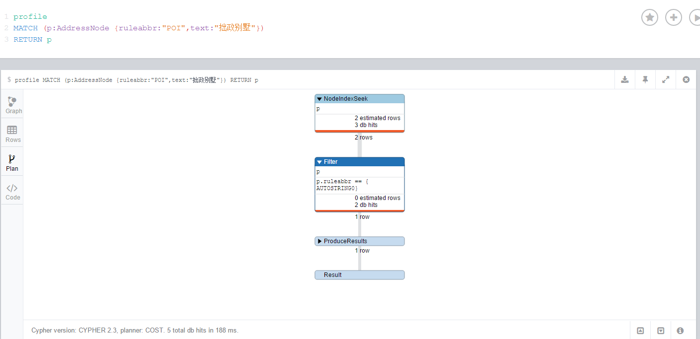

记录常用Cypher语句
参考文档
cypher-query-lang
cypher-refcard
create Node
|
|
Create RelationShip
|
|
Create Unique RelationShip
|
|
match Node
match by property
12MATCH (root { name : 'root' })return rootmatch by ID identifier
123MATCH (s)WHERE ID(s) = 65110RETURN scomplex query
12345678MATCH (d:District {state: {state}, district: {district}})MATCH (d)<-[:REPRESENTS]-(l:Legislator)MATCH (l)-[:SERVES_ON]->(c:Committee)MATCH (c)<-[:REFERRED_TO]-(b:Bill)MATCH (b)-[:DEALS_WITH]->(s:Subject)WITH l.govtrackID AS govtrackID, l.lastName AS lastName, l.firstName AS firstName, l.currentParty AS party, s.title AS subject, count(*) AS strength, collect(DISTINCT c.name) AS committees ORDER BY strength DESC LIMIT 10WITH {lastName: lastName, firstName: firstName, govtrackID: govtrackID, party: party, committees: committees} AS legislator, collect({subject: subject, strength: strength}) AS subjectsRETURN {legislator: legislator, subjects: subjects} AS r
match relationNode
|
|
match Node and relationNode
|
|
match collection
collection contain string
|
|
collection equal
|
|
delete relationship
delete a node with its relationships
|
|
delete all relationships
|
|
start
The START clause should only be used when accessing legacy indexes Legacy Indexing.
In all other cases, use MATCH instead (see Section 11.1, “Match”).
In Cypher, every query describes a pattern, and in that pattern one can have multiple starting points.
A starting point is a relationship or a node where a pattern is anchored. Using START you can only introduce starting points by legacy index seeks.
Note that trying to use a legacy index that doesn’t exist will generate an error.
index
create index
CREATE INDEX ON :PRO( preAddressNodeGUIDs)
drop index
DROP INDEX ON :PRO( preAddressNodeGUIDs)
Neo4j联合索引
Neo4j2.3.x不支持联合索引，可采用拼接字段实现，参考indexing-neo4j-overview；
Neo4j 3.0开始支持联合索引，但需要升级至JDK8，参考github neo4j Issue

|
|

暂测试，疑neo4j由于采用lucene全文索引的缘故，在2个字段各有索引，但无联合索引的情况下，索引倒排会提高检索命中率。